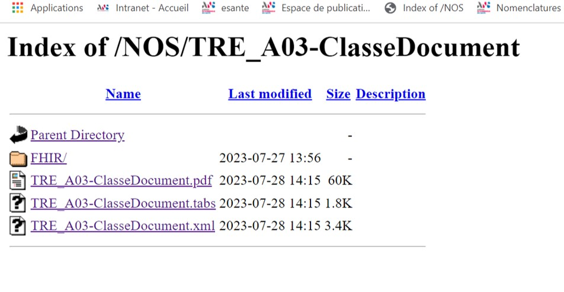
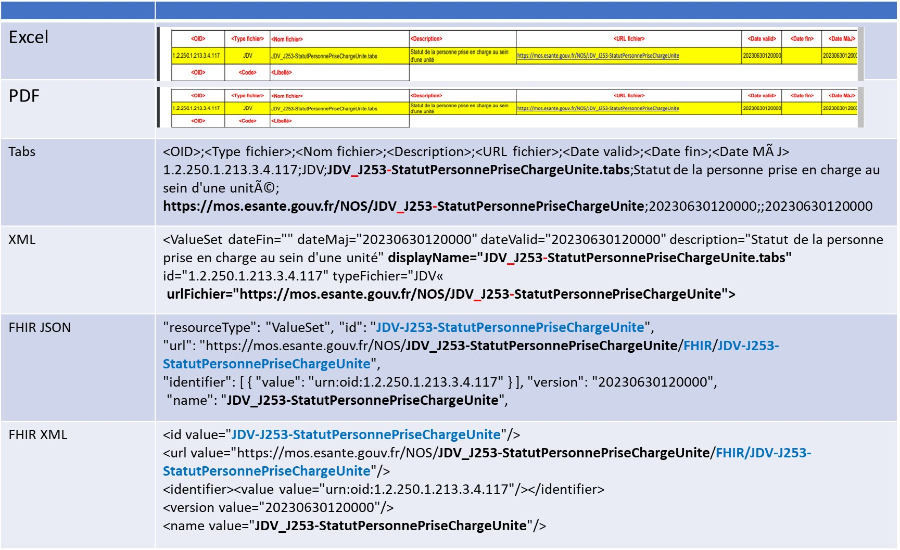
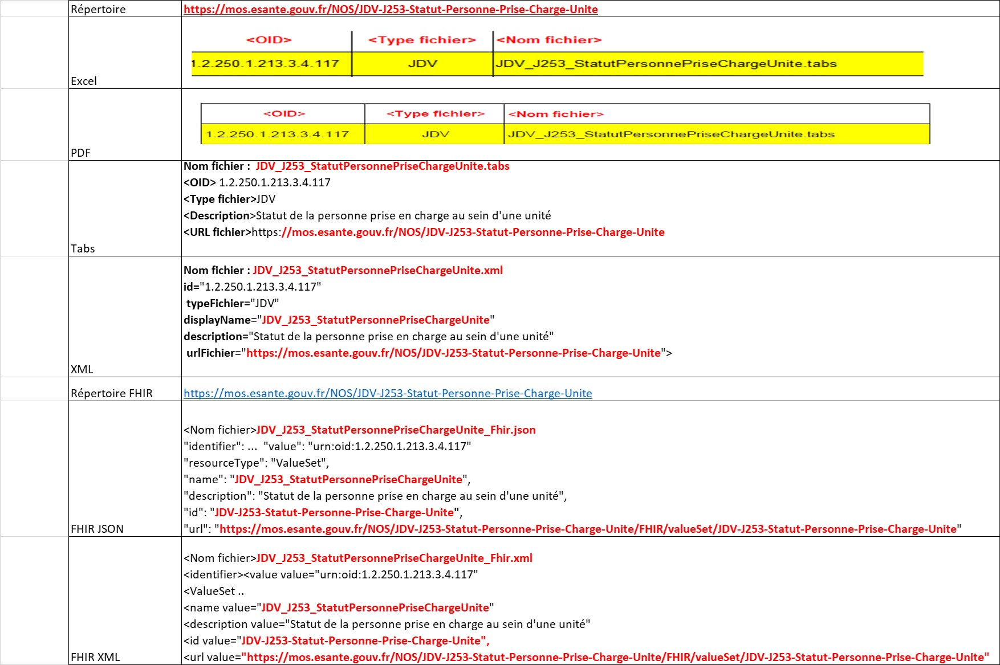

Nomenclatures des objets de santé (NOS) - Local Development build (v1.4.0) built by the FHIR (HL7® FHIR® Standard) Build Tools. See the Directory of published versions
Nommage
DRAFT au 28/08/23
Accueil
IMPACTS SUR LES REGLES DE NOMMAGE DES NOS
Résumé
La règle de nommage des NOS est complexe car elle est utilisée dans le nom des nomenclatures, le nom de l’URL, les noms des fichiers et pour FHIR, dans le nom de l’ID de la ressource. Chacune de ces notions faisant référence à des conventions de nommage différentes.
Par ailleurs, le passage des NOS dans le SMT interroge également dans le nom de domaine à utiliser.
Vu l’impact d’une modification de la règle de nommage des NOS, nous envisageons une migration en 3 temps :
- 1er temps : corriger uniquement le nom de la ressource FHIR
- 2ème temps : appliquer les règles à minima :
- Usage d’un seul séparateur (l’underscore)
- Les noms des ressources et donc de l’ID (Fhir ou non) sont au standard web (avec un tiret entre chaque mot)
- Respecter l’URL FHIR en ajoutant dans le chemin de l’URL le type de ressource (CodeSytem ou ValueSet ou Map)
- 3eme temps : normaliser les noms dans les règles de l’art
Le tableau suivant résume la migration proposée en cible - étape 2/3.
| Règle | Aujourd'hui | Demain (proposition) |
| Nom de la nomenclature |
{type}sep{code}sep{libelléNOS}[sep{libelléSource}][sep{libelléSuffixe}] sachant que "-" et "_" sont acceptés comme séparateur.
Exemple : TRE_A03-ClasseDocument |
{type}_{code}_{libelléNOS}[_{libelléSource}][_{libelléSuffixe}] sachant que ni "-" ni "_" ne sont acceptés dans les libellés xx.
Exemple :TRE_A03_ClasseDocument |
| ID de la nomenclature hors Fhir |
Non applicable |
{nom de la nomenclature Avec Tirets} , soit en remplaçant les '_' en "-" et en ajoutant un tiret devant chaque mot
Exemple : TRE-A03-Classe-Document |
| ID de la nomenclature pour Fhir |
{nom de la nomenclature En Tiret} soit le nom de la nomenclature en remplaçant les caractères "_" par "-".
Exemple : TRE-A03-ClasseDocument |
{nom de la nomenclature Avec Tirets} , soit en remplaçant les '_' en "-" et en ajoutant un tiret devant chaque mot
Exemple : TRE-A03-Classe-Document |
| URL de la nomenclature hors FHIR |
{domaine}/NOS/{nom de la nomenclature}
Exemple : "https://mos.esante.gouv.fr/NOS/TRE_A03-ClasseDocument" |
{domaine}/NOS/{ID}
Exemple : "https://mos.esante.gouv.fr/NOS/TRE-A03-Classe-Document" |
| URL de la nomenclature pour FHIR |
{domaine}/NOS/{nom de la nomenclature}/FHIR/{ID}
Exemple : https://mos.esante.gouv.fr/NOS/TRE_A03-ClasseDocument/FHIR/TRE-A03-ClasseDocument |
{domaine}/NOS/{ID}/FHIR/CodeSystem/{ID}
Exemple : https://mos.esante.gouv.fr/NOS/TRE-A03-Classe-Document/FHIR/CodeSystem/TRE-A03-Classe-Document" |
| nom d'un fichier de la nomenclature |
{nom de la nomenclature}[-FHIR].{extensionFichier}
Exemple : TRE_A03-ClasseDocument-FHIR.json |
{nom de la nomenclature}[_FHIR].{extensionFichier}
Exemple : "TRE_A03_ClasseDocument_FHIR.extension" |
Remarque : Le SMT effectue cette mise à jour
Etude détaillée - Première partie : Nom des nomenclatures
Rappel des règles de nommages Web et FHIR
- nom d’une ressource Fhir :
- Peut comporter tous les chiffres, toutes les lettres et le seul caractère spécial “_”
- lien Fhir sur le CodeSystem
- Règle : name.exists() implies name.matches (‘^A-Z{1,254}$’) // s’affiche mal
- nom de l’ID d’une ressource Web :
Existant : Règle de nommage du nom des nomenclatures NOS
Le nom complet d’une nomenclature NOS comporte des séparateurs car il contient plusieurs informations :
- le type de la nomenclature (TRE/ JDV/ ASS)
- Le code de la nomenclature (ex : “A03” pour la TRE_A03-ClasseDocument)
- Le libellé de la nomenclature (ex : “ClasseDocument” pour la TRE_A03-ClasseDocument)
- Et éventuellement des suffixes (ex : “_ROR” pour un JDV ROR)
Le couple (type de la nomenclature, code de la nomenclature) permet d’identifier de manière unique une nomenclature NOS.
Le nom d’une nomenclature NOS sert de base à créer l’URL et certains identifiants FHIR (nom de la ressource, ID, URL).
La structure
- Les 2 caractères “Underscore” et “tiret” sont utilisés comme séparateurs dans les nomenclatures NOS.
- Chaque nomenclature NOS a une URL qui est le point d’entrée de tous les formats de la nomenclature.
- Pour les formats Fhir, ils sont définis dans un sous répertoire “FHIR” afin d’y respecter les règles de nommage spécifiques à FHIR. Mais dans la réalité, ces règles ne sont pas tout à fait respectées.
Exemple sur la TRE_A03-ClasseDocument :
- nom de la nomenclature : “TRE_A03-ClasseDocument”
- nom du fichier (pdf, tabs, json, xml): “TRE_A03-ClasseDocument.extension”
- URL : “https://mos.esante.gouv.fr/NOS/TRE_A03-ClasseDocument” (non normalisée)
- pour FHIR :
- nom de la ressource (name) : “TRE_A03-ClasseDocument” (non normalisé)
- nom de fichier (JSON) : “TRE_A03-ClasseDocument-FHIR.extension”
- URL : “https://mos.esante.gouv.fr/NOS/TRE_A03-ClasseDocument/FHIR/TRE-A03-ClasseDocument” (non normalisée)
- id : “TRE-A03-ClasseDocument” (OK)
Problèmes sur le nommage des NOS
- La règle de nommage des NOS n’est pas claire car elle utilise deux séparateurs : “-“ et “_”.
- Il existe encore le caractère “-“ dans le nom entier de la ressource (FHIR ou non FHIR)
- Il manque le type de la ressource dans l’URL de la ressource FHIR
- Le nom de l’URL FHIR en devient très ambigüe
Cible : Règle de nommage idéale ( A challenger)
Pour être en phase avec les standards Web et FHIR, nous devons donc nous assurer que l’ID ne comporte pas de “_” et que le nom de la nomenclature ne comporte pas de “-“.
Contrainte NOS :
Chaque nomenclature NOS comporte plusieurs formats dont le format FHIR. Même si dans le SMT, les NOS doivent être au format FHIR, nous souhaitons garder cette indépendance.
Cela se traduit par un espace de nom pour chaque nomenclature et à l’intérieur de cet espace de nom, les formats classiques et un espace de nom par format spécifique
Exemple des fichiers de la nomenclature TRE_A03-ClassDocument :

Exemple URL NOS - Existant
Préconisations :
- S’aligner sur la convention de nommage KEBAB Case pour nommer une ressource WEB (les mots sont séparés par des tirets).
- S’aligner sur la convention de nommage Pascal Case pour nommer le nom de la nomenclature ou le nom du fichier (les mots sont liés sans espace et chaque mot commence par une Majuscule).
- La lettre précédant le numéro de nomenclature devrait indiquer le type de NOS : “A” pour ASSO ; “T” pour TRE et “J” pour JDV.
- le code d’une nomenclature (lettre en majuscule + 4 chiffres [lettre en minuscule]) doit être unique dans les NOS.
- Simplifier le nom de la nomenclature en retirant les méta-données qui devraient être définies à l’intérieur de la nomenclature et non dans le nom de la nomenclature (ex : type de la nomenclature en toutes lettres, SI responsable).
Exemple :
La nomenclature “JDV_J32-TypeHabitation-ROR” deviendrait :
- nom de la nomenclature : “J0032TypeHabitation”
- nom de fichier (pdf, tabs, json, xml): “J0032TypeHabitation.extension”
- URL : “https://mos.esante.gouv.fr/NOS/J0032-Type-Habitation”
- pour FHIR :
- nom de la ressource (name) : “J0032TypeHabitation”
- nom de fichier (JSON) : “J0032TypeHabitationFHIR.extension”
- URL : “https://mos.esante.gouv.fr/NOS/J0032-Type-Habitation/FHIR/valueSet/J0032-Type-Habitation”
- id : “J0032-Type-Habitation”
Remarque : il existe des codes TRE avec un même numéro. Exemple : TRE-A01 et TRE_R01 ==> Serait à renommer en T0001a et T0001r
Migration : Renommage des NOS en 3 temps
Premier temps : corriger uniquement le nom de la ressource FHIR
- Corriger uniquement l’attribut “name” de la ressource FHIR pour qu’il ne contienne plus de tirets.
Second temps : Appliquer les règles à minima
- Usage d’un seul séparateur (l’underscore)
- Les noms des ressources et donc de l’ID (Fhir ou non) sont au standard web (avec un tiret entre chaque mot)
- Respecter l’URL FHIR en ajoutant dans le chemin de l’URL le type de ressource (CodeSystem ou ValueSet ou Map)
==> Le standard Fhir sera respecté et le résultat sera moins ambiguë
Troisième temps : réaliser la règle de nommage idéale
==> appliquer les règles de nommage idéales
Etude détaillée - Seconde partie - Choix du nouveau nom de Domaine
Existant :
- https://mos.esante.gouv.fr/NOS/
et pour FHIR : https://mos.esante.gouv.fr/NOS/lanomenclature/FHIR//ID
Demain :
- https://mos.esante.gouv.fr/SMT/NOS/ ?
- https://mos.esante.gouv.fr/SMT ?
- Autre ?
- Et pour FHIR :
- https://mos.esante.gouv.fr/NOS/ID/FHIR/typeRessource/ID ?
- Autre ?
A compléter
Exemple complet
Image de l’existant

Exemple de nommage d'une nomenclature sur le JDV_J53 - Existant
Résultat attendu en cible - étape 2/3

Exemple de nommage d'une nomenclature sur le JDV_J53 -Cible Etape 2 sur 3
Documents de référence
- Même si ce document doit être actualisé, la convention de nommage est la base des règles de l’existant NOS : lien
- Règles de codage